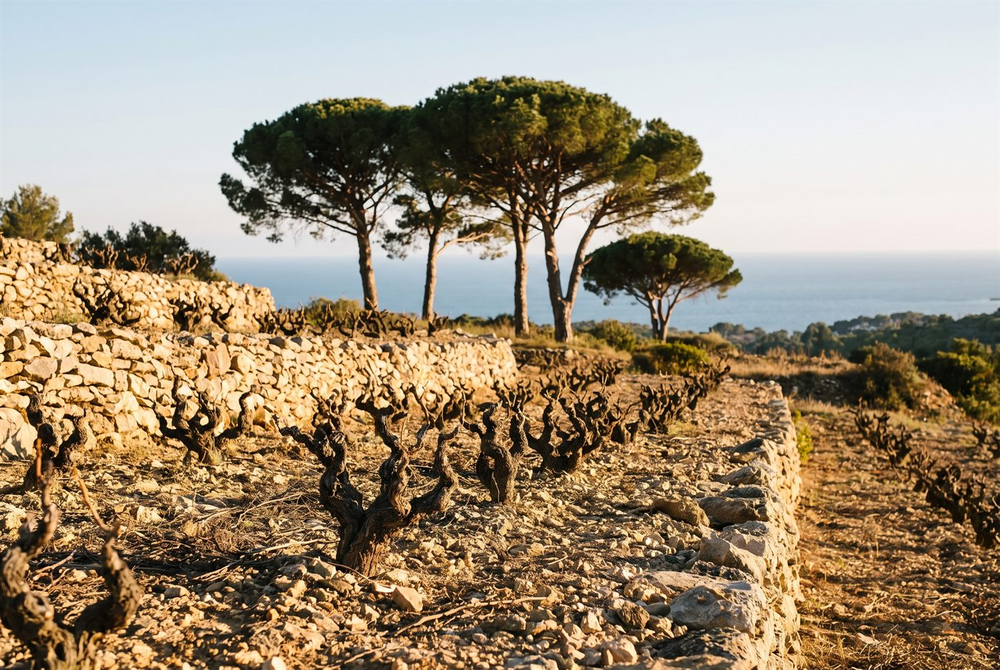

Les domaines · Provence · La Cadière-d’Azur
25
La Cadière-d’Azur, Bandol · Provence
Domaine Jean-Pierre Gaussen
Des Bandol de mourvèdre presque pur, denses et taillés pour la garde.

Ambiance de La Cadière-d’Azur
Jean-Pierre et Julia Gaussen ont fondé le domaine dans les années 1960 à partir d'un seul hectare, en bâtissant eux-mêmes la cave, aujourd'hui creusée dans la roche et tenue à 14 degrés toute l'année. Leur fille Mireille les accompagne dans l'élaboration des vins. Sur douze hectares d'argilo-calcaire, le mourvèdre domine largement les rouges, élevés vingt à vingt-deux mois en foudres.
Blancs
- Cépage · Clairette, BourboulencBlanc floral, encépagement indiqué par le Guide Hachette.
Rosés
- Apprécié pour ses notes florales et sa typicité, selon la description du domaine.
Rouges
- Cépage · Mourvèdre (environ 95 %), CinsaultProduite seulement dans certains millésimes, longue macération et près de deux ans en vieux foudres.
- Cépage · Mourvèdre, CinsaultLe rouge produit chaque année, mourvèdre dominant sur argilo-calcaire.
Ces cuvées vous parlent ?
Demander les disponibilités